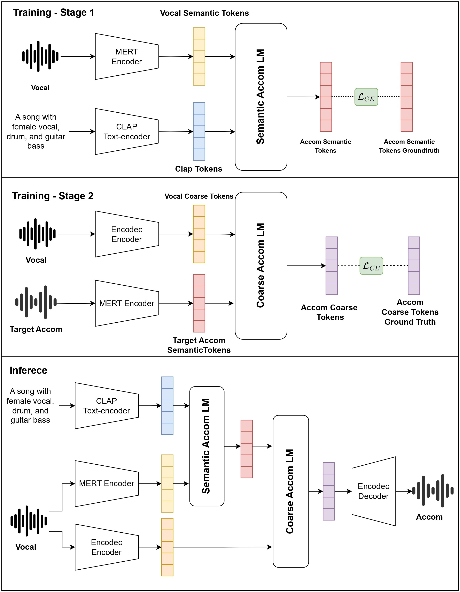

Sing-On-Your-Beat: Simple Text-Controllable Accompaniment Generations
Anonymous
Abstract
Singing is one of the most cherished forms of human entertainment. However, creating a beautiful song requires an accompaniment that complements the vocals and aligns well with the song’s instruments and genre. With advancements in deep learning, previous research has focused on generating suitable accompaniments but often lacks precise alignment with the desired instrumentation and genre. To address this, we propose a straightforward method that enables control over the accompaniment through text prompts, allowing the generation of music that not only complements the vocals but also aligns with the song’s instrumental and genre requirements. Through extensive experiments, we successfully generate 10-second accompaniments using vocal input and text control. Additionally, our method demonstrates robust control over the generated accompaniment based on input prompts, improving alignment with the song’s instrumental and genre needs.

Each token type is in the color as follows: vocal semantic tokens, vocal coarse tokens, clap text token, accom semantic token, and accom coarse token.
Comparing with SingSong
| Sample 1 | Sample 2 | |
|---|---|---|
| Prompt | Accompaniment with romantic, acoustic, female vocals, piano, guitar, bass, love song, movie soundtrack | Accompaniment with romantic, acoustic, female vocals, piano, guitar, bass, love song, movie soundtrack |
| Vocal Input | ||
| Ground Truth Accompaniment |
||
| SingSong Accompaniment |
||
| SingSong Mixed |
||
| Llambada Accompaniment |
||
| Llambada Mixed |
| Sample 3 | Sample 4 | |
|---|---|---|
| Prompt | Accompaniment with romantic, female vocals, simple beat, arpeggiated guitar, bass, percussion | Accompaniment with romantic, acoustic, female vocals, piano, guitar, bass, love song, movie soundtrack |
| Vocal Input | ||
| Ground Truth Accompaniment |
||
| SingSong Accompaniment |
||
| SingSong Mixed |
||
| Llambada Accompaniment |
||
| Llambada Mixed |